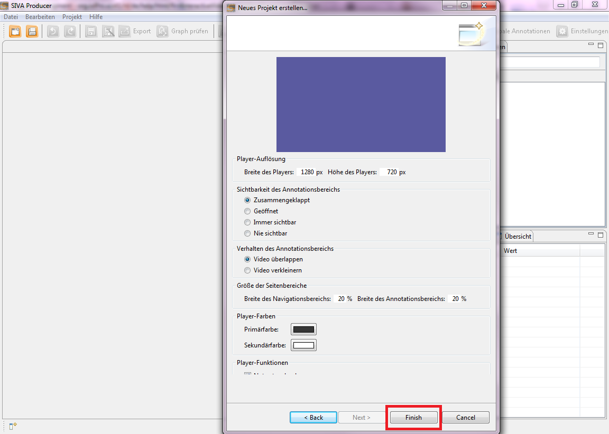

To create a video project click on the button 'create new project' in the toolbar. After that a window for creating a new project is opened.
First you have to choose a memory location by clicking on the 'search'-button and navigating to the target directory. After that you set a project name and click on the 'next'-button to come to the next dialog (choice of the start mode).

In the dialogue window you can define the design of the player. For this there are some options available. For example you can choose if the annotation sector is visible or not, how big the page range should be or how the colors of the player should look like. By clicking the 'finish'-button a pop up window appears. In this you are asked if you want to add media files now. Please click in this window on the 'no'-button, because in this tutorial you learn how you can add media manually.

After that the window is closed and you have added a new project with the specified name under specified memory location. The first step is finished and you are now in the project dialogue which should be look like this.

Next step is loading a medium in SIVA. Please click on the next menu item 'Loading a medium' in the help index on the left side or on the link below. Adding media files